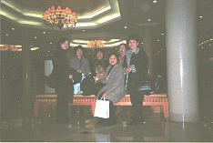
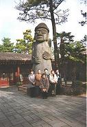

余所の国へ行ったら、せめて「こんにちは」と「ありがとう」くらいはその
お国の言葉で言ってみたいものですよね。
そこで、ちょっと韓国のご挨拶をお教え致します。
アンニョン ハセヨ ＝ おはよう こんにちは こんばんは
カムサ ハムミダ ＝ ありがとう
アンニョンヒ ケセヨ＝ 気をつけて居て下さい（いってきますのようなもの）
アンニョンヒ カセヨ＝ 気をつけて行って下さい（行ってらっしゃいですね）
とりあえずこの４つの言葉を教えていただいたのですが、済州島では、昔 日本人が多く住んでいたということもあってか、観光客相手の人たちは大抵 日本語を話せ、先に「こんにちはぁ」などと言われてしまうと、つい つられて「こんにちはぁ」と返事をしてしまいます。
たとえば、私たちはお土産を買ったりするのに、よくホテルの近くのコンビニ やスーパーに行くのですが、済州島には大きなスーパーはないとのことで、 ホテルの側にコンビニをみつけて買い物に行きました。
地元の人相手のコンビニでは日本語が通じませんので、ちょっと何かを聞 きたいというときには大変苦労をするのですが、ここでは、まあお土産になり そうな物もなかったとはいうものの、まったく違和感なく買い物ができました し、通り道に並んでいたお店からは、「こんにちはぁ」と店員さんが出てき て、商魂たくましく中に入って見ていくように誘います。
思わず
はて さて、昨日も１２時前には寝たはずなのに、またまた８時頃まで寝て しまい、前日もこの日も曇ってはいたものの（寝過ごし防止のためカーテンは レースだけしか使っていない）、そんなに疲れていることもないはずないのに… どうしてこんなに遅くまで寝られるんだろう？と不思議に思っていましたが、 後でのんびり一階のロビーを歩いていたら、その日のお天気や気温などが書いて ある所がありまして、日の出が７時３５分とあって、やっと納得ができました。
時差はないとはいうものの、１時間くらいの
時差現象が起こっていたのです。
この日はホテルのレストランでバイキングの朝食と決め、（２８００円だった と思いますが、はっきり言って品数は少なかったです）二日続きのカルビ責めの せいか、朝から食欲旺盛な私にしては質素なもので終わりました。
１２時にはチェックアウトしなければならないので、あまり時間はありませんで したが、それでも すぐ近くにある免税店を覗きに行き、あっという間に時間は 過ぎ去り、ホテル内の探検もできないまま、チェックアウト!
お迎えに来ていたふぁみさんと一緒にホテルを後にした私たちは、お決まりの お買い物コースをたどり、昼食のお店へ…
空港で時間はあるというものの、機内食が出るのは解っているので、かぁるく 石焼きビビンバとチヂミ（お好み焼きのようなもの）を三人前ずつ取って、 仲良く分けあって食べましたが、私としては このお店のチヂミは好きでした。

とまあ、こんな具合で三日間の済州島旅行は終わったわけですが、現地添乗員
のふぁみさんには我儘なおばさんのお相手を、嫌な顔一つしないでお相手頂き、
お世話になりました。m(_w_)m
ご本人にも了解を頂いてきましたので、写真ができ次第皆さまにもふぁみさんを
ご紹介できることと思いますので、今しばらくお待ち下さいませ。

二日目に行った民族村にはこんな大きなトレハルバンが…→火山石で作った「トレハルバン」というお爺さんの守り神のような物が、島の 至る所にあり、これがまた、土産物として小さな物から人より大きな物まで様々 な大きさで売っており、どうやら対になっているらしく、ちょっと違う一点が ありました。
私としてはユニークだと思うのですが、旅行に行く前に済州島を訪れたある人
に聞いたところ、この置物の小さい物を幾つか買って友達にあげたのですが、
突き返されてしまったということで、なるほど…彼の家の下駄箱の上には同じ
物がいくつか並んでいたのを思い出しました。
あれは お嫁に行きそびれたのか…（＾－＾；
他には、革製品とかキムチ、塩やごま油で味付けされた韓国海苔といった
ところが定番ですが、私はあるお土産やさんで印鑑を作ってきました。
水晶の練り物と聞きましたが、色彩がとてもきれいで何色かあった中でどれも
欲しくて悩んだ挙句、泣く泣く三本選んでお願いしました。
字体は四種類あって、パソコンの画面に順番に出てくるうちから選ぶことがで き、そのパソコンから連動された機械がが目の前で、チャカチャカと文字を 彫っていきます。
長さは５センチくらいの物で、同じ素材のキャップがついており、シャ○ハタ のものより一回り大きいくらいの丸形のものが、皮のケースに入って一本 ２３００円だったと（ちょっと曖昧）思います。
手芸品も色彩 がと ても 鮮や かで、シルクの巾着袋を何枚か買ってきたのですが、 これも全色欲しくなるような美しさで、迷いに迷って選びました。（一枚 ６００円くらい）
なんだかお金のことばかり書いてしまったような気がしますが（しかも、ウオン になったり円になったり…そのくらい円が通用したということですが）、私は こと数字に関してはいたって無頓着といいますか、払うときはちゃんと考えて いるつもりなのですが、払う物を払ってしまったら片っ端から忘れていきます。
このようにして削除できる物はどんどん捨てていかないことには、新しい情報が
頭の中にインプットできない…なぁんて、実はただの忘れっぽい人なので、覚
えている間に書かないと（あぁ…数字がだんだん薄れて行く…）、これから行
こうと思っている人が読んで下さっても、なんの目安にもなりませんので、大事
な金額だけでもこれからはちゃんとメモって来るようにしたいと思っています。
お土産といえば、ちょっとしたハプニングがありました。
漆に貝を埋め込んで繊細な模様を描いた小物入れとか、宝石箱のようなものが
大小様々な大きさで売っていましたが、これが日本で買うより安いと言って
買った人があり、次のお店に行ってしばらくすると、
「また やった、また やった」
と情けない顔をしてその人が私のところにやってきた。
なんだろう?と思っていると、どうやらそのお店にさっき買ったものと同じ物が 置いてあり、お値段がちょっと安かったらしい。
このお方、始めての海外旅行でグアムに行ったのですが、厳選に厳選を重ねて お土産を買い集めていたのが、偶然に入ったコンビニで同じ物が少し安く 売っており、ぷりぷり怒って帰ってきたことがありました。
日本語が通じるので長々と店員さんと話していたかと思うと、ふぁみさんが 先ほどのお店に電話をして、交渉の結果、そこのお店と同じ値段にするという ことになったとか…（うぅーん、やりますねぇ）
そして、空港での待ち時間に立ち並ぶ免税店を覗いて廻っていると、更に安い
お値段で同じ物が売っていたとか…
「もう、お土産は一番最後に買うことにする」
なぁんて、そんなこと言ってたら、本当に欲しい物を買いそびれて私のように
後悔しますよ（＾－＾；
と、その後悔しているというのは、同じ韓国でのお話しですが、釜山のデパート
で冬物バーゲンをしていたのですが、ラム皮のブレザーがなんと１３０００円で
売っていたんですよぉ。
マネキンが着ていたので触ってみたのですが、手触りもよく、これは絶対にお買
い得！！と思ったのですが、持ち合わせのウオンがあまり無く、カードで買うし
かありません。
悩みました。
欲しい…でも、今回はお買い物ツアーでしっかり買い物しちゃったし…
どうしよう？…どうしよう？
結局買わなかったのですが、未だにあの１３０００円の値札が目の前にちらつい ており、今回も柔らかい皮のベストをみつけたのですが、９０００円の値段で つい、ぱっ！ っと手から離してしまいました。（あのデパートなら、もっと安 いかもしれない…と）
もうひとつ、ハプニングがありました。
帰りの空港で、手荷物の検査と金属探知器のゲートで一人逮捕…いやいや、 何か引っかかる物があったらしく、係員の人に取り囲まれている。（汗
難なく通過してしまった私たちはちょっと離れて待っていたのですが、あまり
遅いので心配になり、側に行ってみると、機内持ち込みのバッグから中身を出し
ており、やがて出てきたお土産の包みを、係りの人が本人の承諾を取った上で開
けたかと思うと、中から出てきたのは
ピストル
カチッ! カチッ! っと念のために、ライターである証の炎をつけて、なんとな くほっと緊張が解けたような係員のあの雰囲気は、パンツの中に何かを隠して いなくっても、ご本人はドキドキしたでしょうねぇ。
韓国では旧の暦でお正月だそうで、私たちが行った時は（１月８～１０日）
まだクリスマスの飾りが残っていました。
今年は２月１日がお正月なので、この旅行記が完成した今頃は、街やホテルには
どんな飾り付けがされているのでしょうね?
そう言えば、ホテルにはカジノもありました。
もし行っていたら、誰かが大富豪になって帰ってきたかも…